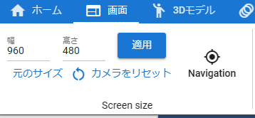

7.2. App operation
7.2.1. (Web application version) Use in a separate window from the browser
The web app version can be used in a completely separate window from the browser itself, such as Chrome or Edge, using a technology called PWA.
See How to install for details.
- merit
You can make the window size different from the browser body
You can continue using this application even if you close the browser body
Appearance becomes closer to the app of each OS
Added to the Start Menu or Launcher Menu and can be opened from there
Please install the web app version instead of using it as a tab.
- VR/AR
Handling varies depending on the device.
PICO4 can be installed as a PWA. However, it does not support multiple windows, so some small windows will overwrite the main screen of the app. You can go back by using the back button on your browser.
- Smartphones, tablets
PWA installation is possible. The icon of this app will be displayed in the list of apps. After installing PWA, the display mode will be normal, but you can switch to the About this app screen. For details, see Buttons .
7.2.2. Change screen resolution
By default, the WebGL screen that manipulates the 3D model has a size suitable for the window size. With this application, you can freely change the size (≈ resolution) of the WebGL screen.
Enter the
WidthandHeight.Press the Apply button.
Scrollbars are displayed if they do not fit in the display area.
restore to original size
Press the
Original Sizebutton.
7.2.2.1. Take advantage of navigation
When the screen resolution increases, it is necessary to scroll the part that cannot be seen before operating. In that case, using the navigation implemented from Ver 2.0 makes it easier to operate.
Press the
Navigationbutton in the Screens tab of the ribbon bar.

A small navigation window will appear inside the main app window.

A red frame is displayed as the currently displayed range on the navigation preview screen.
If the resolution of the WebGL screen is larger than the display area, clicking or dragging the red frame anywhere will scroll the WebGL screen accordingly.
Hint
You can also Resize'' and ``Reset Camera from within the navigation window.
7.2.3. apply anti-aliasing
With this application, you can apply anti-aliasing to the WebGL screen.
Open the Screens tab of the Ribbon bar.
Check
Antialiasingon the right.

Warning
It is possible to play poses and motions while it is on, but the operation may become slow.
Anti-aliasing is originally in the category of system effects (post-processing), but in consideration of the impact on operation, it will not be registered in animations.
When anti-aliasing is enabled, unnecessary lines may intersect when capturing
sky night blue/sky night purplein the sky setting of the Stage object. This is the WebGL specification. please note that.
7.2.4. Change the size and display of IK markers
To change the size of the IK marker, specify it from Options on the Screen tab of the ribbon bar.

- resize
Specify by moving the IK marker size slider.
- the display itself
Turn on/off the check for Show IK Markers.
7.2.5. Operating the main camera
In this app, the main camera always has a center point that serves as the axis of rotation. The display can be turned on and off by setting, but the display is turned on by default for clarity.
Since keyboard operations are involved, please see Special operation for detailed operation methods.

Rectangle displayed in dim semitransparency is applicable.
The main camera rotates based on this center point. If you bring the object you want to see closer to the center point, you can see the object in 360 degrees.
However, if you continue to move the camera or move the object, the distance and position may not necessarily match, and the display may gradually shift. In that case, press the I key or O key on your keyboard.
Then the center point will move closer or further away from the main camera.
7.2.5.1. Distance between center point and object
The distance between the center point and the currently selected object is displayed in the upper right.

This is just a guideline. If you press the I and O keys, there will be a border between decreasing and increasing values. That is the point where the center point and the currently selected object overlap. If you rotate the camera there, you can rotate around the object relatively cleanly.
Hint
This can be adjusted in the application settings Distance between camera and center point .
7.2.5.2. If you move or rotate too much and the center point is blown away
If you move, rotate, or change the axis on the upper right of the WebGL screen, the center point may shift. In that case, press the R key when the keyboard is in camera mode. Then the main camera and center point will be reset to the initial position.
Hint
he same is true for the Reset Camera button on the Screen tab of the ribbon bar.
Press the Q key to reset the hard-to-adjust Z axis.
7.2.5.3. Rotate 360 degrees around an object
The camera is used like a turntable. Continues to circle around the selected object.
Notice the Options area in the Screen tab of the ribbon bar.
Enter the desired value for
Rotation Speed. Default is 15.Check
360 degree rotationon the screen tab of the ribbon bar.It will continue to rotate until it is unchecked.
Hint
You can also take screenshots or record the screen in this state.
Caution
Rotation will stop while switching to VR/AR.
7.2.6. Objects and keyboard operations
For a detailed explanation of keyboard operations, please see Special operation .
- Standard of operation
This app is based on global coordinates .
Note
You can operate by switching global and local coordinates by keyboard operation.
X keyglobal/local switching for IK markers
G keyglobal/local switching for keyboard movement/rotation
However, what is displayed in the input field on the UI is the global coordinates.
- the state of the current operation
The operating criteria for the current object or screen are displayed in the upper right.
operation mode
coordinate switching
Value 1
C - Camera
G - Global
value 2
O - Object
L - Local
Screen display

Operation key
M key
G key
- left alphabet
Indicates the operation mode with the keyboard. Pressing the
M keywill switch C - O.C operates the main camera, and O operates the selected object.
- right alphabet
Indicates the coordinates at which the object is manipulated. Pressing the
G keywill switch G - L.G moves and rotates in global coordinates, and L moves and rotates in local coordinates.
Warning
Global/local switching of the
X keyis not reflected. Please be careful of confusion.
Hint
Setting the manipulation mode to O object will allow you to move and rotate the object with both mouse and keyboard, which will be more efficient.
7.2.7. Get more out of your mouse and touch interactions
This application moves the WebGL screen using a mouse or touch, but depending on the usage and environment, you may need to use keyboard operations such as the Ctrl key or SPACE key. A window called V-pad allows you to perform all mouse operations in environments where a keyboard cannot be used immediately.
- V-pad
By using this window, you will be able to use the movement, rotation, zoom in and zoom out of the main camera in common without worrying about the mouse or touch environment.
Starting with version 2.10.0, you can now move and rotate selected objects.
This can also be used on mobile devices such as VR devices and smartphones. Operations that you wouldn’t know how to do with touch can be easily performed in this window by swiping the panel that suits your purpose.
See v-pad (virtual control pad) for how windows look and how to use them.
About the speed of movement and rotation
You can adjust the speed using the V-pad’s
Movement SpeedandRotation Speed’ in theApplicationtab of the application settings.- Various operation examples
Rotate the main camera using the mouse. Move the main camera using WASD FV keys
General operations of the main camera can be performed using the V-pad, and detailed adjustments can be made using the mouse.
スマートフォンで左手で V-pad の移動パネル、右手で V-padの回転パネルを操作する
Gamepad support has been added since version 2.10.0. For details, please see Gamepad Controls. The operation feel is the same as that of the V-pad.
Try to find the operation method that suits you.